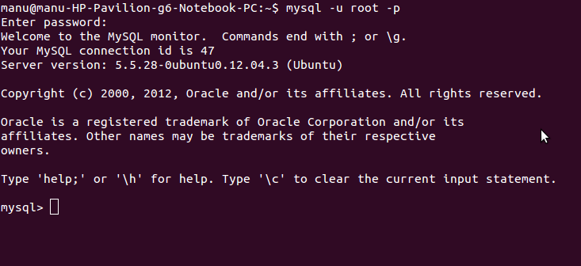
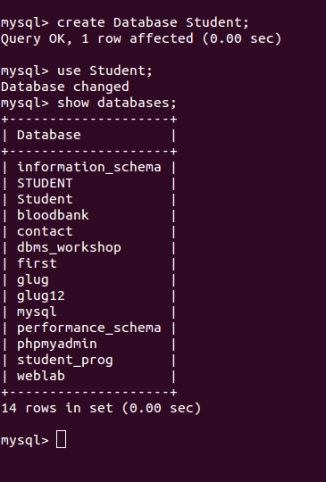
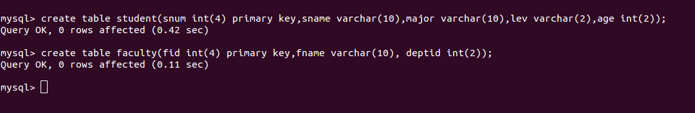

How to install Mysql?
With internet connection:
Using terminal:
To install MySQL, run the following command from a terminal prompt:
sudo apt-get install mysql-server
During the installation process you will be prompted to enter a password for the MySQL root user. Once the installation is complete, the MySQL server should be started automatically. You can run the following command from a terminal prompt to check whether the MySQL server is running:
sudo netstat -tap | grep mysql
When you run this command, you should see the following line or something similar:
tcp 0 0 localhost:mysql `
:` LISTEN 2556/mysqld
If the server is not running correctly, you can type the following command to start it:
sudo /etc/init.d/mysql restart
Using Ubuntu software Center:
Open ubuntu softaware centre, type Mysql Server in search, Click Install.
Offline installation:
Using terminal:
a. Download or acquire the deb packages of mysql. http://dev.mysql.com/downloads/mysql/5.6.html http://packages.ubuntu.com/quantal/multiarch-support
b. Copy it in a empty folder.
c. Go to to the empty folder path through terminal and type
Sudo dpkg -i .deb*
Using Ubuntu software Center:
a. Right click the deb package and click open through ubuntu software centre.
To get Mysql Prompt in Terminal
Type the following command to get MySQL prompt :
mysql -u root -p
Enter the Mysql password
root123
NOTE: mysql refers to command
-u root -p refers to user root password
>>login to MySQL as root user(u) with mysql password(p).
Creation of Database and query execution.
You will get the MySQL prompt as shown below:

Database Object Creation:
To create Database
Create Database Student;
To Use Database
use Student;
To view the databases
show databases;

Table Creation:
create table student(snum int(4) primary key,sname varchar(10),major varchar(10),lev varchar(2),age int(2));
create table faculty(fid int(4) primary key,fname varchar(10), deptid int(2));
create table class(cname varchar(10) primary key,meetat varchar(10),room varchar(4), fid int(4) references faculty(fid));
create table enrolled(snum int(4) references student(snum),cname varchar(10) references class(cname));

4. Inserting values into Table:
insert into student values(121,'Agrawal','CSE','SR',21);
insert into student values(119, 'Tony ', 'CSE', 'SR',21);
insert into student values(122, ' Krishna ', 'CSE', 'JR',20);

5. to execute Query;
To find the author1 of the book which has maximum sales:
select author1_name from author1 a,catalogue1 c where a.author1_id=c.author1_id and book_id in (select book_id from orderdetails1 where quantity= (select max(quantity) from orderdetails1));

6. To get the tables information use DESC command.

7. Contents of the table can be viewed by using the command SELECT as follows:

8. In between if user wants to clear the screen of the terminal then press:
ctrl+l.
9. To get any information about the commands used in the mysql use "help" command.
Eg: help insert;
help create;
10. Type exit to exit from the MySQL prompt.
Note 1 : MYSQL is a a case sensitive.
Ex: "desc MEMBERS" is differ from "desc members".

Note 2:
| Handy MySQL Commands | |
|---|---|
| Description | Command |
| To login (from unix shell) use -h only if needed. | [mysql dir]/bin/mysql -h hostname -u root -p |
| Create a database on the sql server. | create database [databasename]; |
| List all databases on the sql server. | show databases; |
| Switch to a database. | use [db name];use [db name];use [db name]; |
| To see all the tables in the db. | show tables; |
| To see database's field formats. | describe [tadescribe [table name]; |
| To delete a db. | drop database [database name]; |
| To delete a table. | drop table [table name]; |
| Show all data in a table. | SELECT FROM [table name]; |
| Returns the columns and column information pertaining to the designated table. | show columns from [table name]; |
| Show certain selected rows with the value "whatever". | SELECT FROM [table name]
WHERE [field name] = "whatever"; |
| Show all records containing the name "Bob" AND the phone number '3444444'. | SELECT FROM [table name] WHERE name = "Bob" AND phonenumber = '3444444'; |
| Show all records not containing the name "Bob" AND the phone number '3444444' order by the phonenumber field. | SELECT FROM [table name] WHERE name != "Bob" AND phonenumber = '3444444' order by phonenumber; |
| Show all records starting with the letters 'bob' AND the phone number '3444444'. | SELECT FROM [table name] WHERE name like "Bob%" AND phonenumber = '3444444'; |
| Use a regular expression to find records. Use "REGEXP BINARY" to force case-sensitivity. This finds any record beginning with a. | SELECT FROM [table name] WHERE rec RLIKE "^a$"; |
| Show unique records. | SELECT DISTINCT [column name] FROM [table name]; |
| Show selected records sorted in an ascending (asc) or descending (desc). | SELECT [col1],[col2] FROM [table name] ORDER BY [col2] DESC; |
| Count rows. | SELECT COUNT(*) FROM [table name]; |
| Join tables on common columns. | select
lookup.illustrationid, lookup.personid,person.birthday from
lookup left join person on lookup.personid=person.personid=statement to join birthday in person table with primary illustration id; |
| Switch to the mysql db. Create a new user. | INSERT INTO [table name] (Host,User,Password) VALUES('%','user',PASSWORD('password')); |
| Change a users password.(from unix shell). | [mysql dir]/bin/mysqladmin -u root -h hostname.blah.org -p password 'new-password' |
| Change a users password.(from MySQL prompt). | SET PASSWORD FOR 'user'@'hostname' = PASSWORD('passwordhere'); |
| Switch to mysql db.Give user privilages for a db. | INSERT INTO [table name] (Host,Db,User,Selectpriv,Insertpriv,Updatepriv,Deletepriv,Createpriv,Droppriv) VALUES ('%','db','user','Y','Y','Y','Y','Y','N'); |
| To update info already in a table. | UPDATE [table name] SET Selectpriv = 'Y',Insertpriv = 'Y',Updatepriv = 'Y' where [field name] = 'user'; |
| Delete a row(s) from a table. | DELETE from [table name] where [field name] = 'whatever'; |
| Update database permissions/privilages. | FLUSH PRIVILEGES; |
| Delete a column. | alter table [table name] drop column [column name]; |
| Add a new column to db. | alter table [table name] add column [new column name] varchar (20); |
| Change column name. | alter table [table name] change [old column name] [new column name] varchar (50); |
| Make a unique column so you get no dupes. | alter table [table name] add unique ([column name]); |
| Make a column bigger. | alter table [table name] modify [column name] VARCHAR(3); |
| Delete unique from table. | alter table [table name] drop index [colmn name]; |
| Load a CSV file into a table. | LOAD DATA INFILE '/tmp/filename.csv' replace INTO TABLE [table name] FIELDS TERMINATED BY ',' LINES TERMINATED BY '\n' (field1,field2,field3); |
| Dump all databases for backup. Backup file is sql commands to recreate all db's. | [mysql dir]/bin/mysqldump -u root -ppassword --opt >/tmp/alldatabases.sql |
| Dump one database for backup. | [mysql dir]/bin/mysqldump -u username -ppassword --databases databasename >/tmp/databasename.sql |
| Dump a table from a database. | [mysql dir]/bin/mysqldump -c -u username -ppassword databasename tablename > /tmp/databasename.tablename.sql |
| Restore database (or database table) from backup. | [mysql dir]/bin/mysql -u
username -ppassword databasename < /tmp/databasename.sql |
| Create Table Example 1. | CREATE TABLE [table name]
(firstname VARCHAR(20), middleinitial VARCHAR(3), lastname
VARCHAR(35),suffix VARCHAR(3), officeid VARCHAR(10),userid VARCHAR(15),username VARCHAR(8),email VARCHAR(35),phone VARCHAR(25), groups VARCHAR(15),datestamp DATE,timestamp time,pgpemail VARCHAR(255)); |
| Create Table Example 2. | create table [table name]
(personid int(50) not null auto_increment primary key,firstname
varchar(35),middlename varchar(50),lastname varchar(50) default
'bato'); |
Please go through the video tutorials on MySQL developed and released by Spoken Tutorial Project, an initiative of National Mission on Education through ICT, Government of India, to promote IT literacy through Open Source Software. Students can go through these video tutorials to get better understanding of the subject. The tutorials for MySQL can be downloaded from here. More info about the project can be found here.
The MySQL Handbook is also available in the mysql-doc-5.0 package. To install the package enter the following in a terminal: sudo apt-get install mysql-doc-5.0